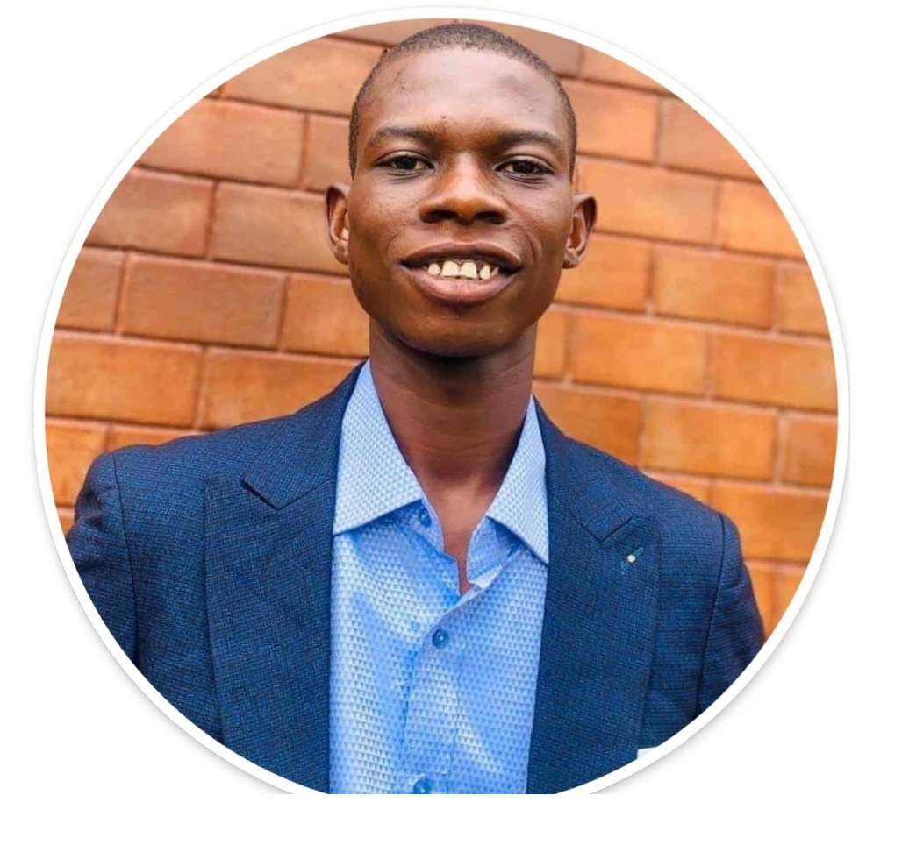

Antoine Mpinga Kalambayi | WDD 130

Hello friends, my name is Antoine Mpinga Kalambayi, I'm from DRC currently and i'm living in Mbuji-Mayi. I'm a returned Missionnary from spetember 2022, i served in DRC Kinshasa East Mission and i've meet nice people during my mission, I love making friend and get to know new cultures and regions arround the world. I'm from a big family of nine childreen and i'm the 7th person of my family. I'm so happy to be a part of justclass and i'm looking forward to learn from each one of you. Thanks